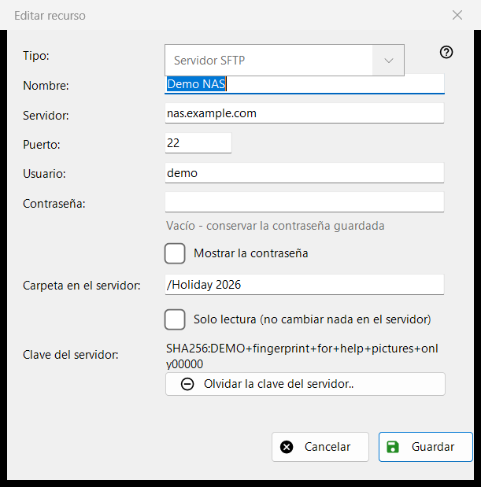
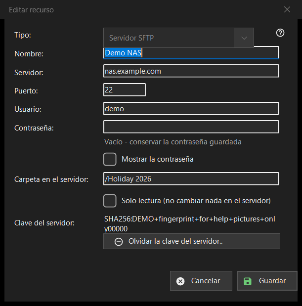

Editar recurso
Para qué sirve
El formulario de un servidor o una carpeta de red guardados. «Añadir..» en la lista de recursos lo abre vacío con el título «Nuevo recurso», «Editar..» lo abre relleno como «Editar recurso», y una dirección sftp:// escrita en el cuadro de carpeta lo abre con los datos ya rellenados.


En este orden
- Elija el tipo: servidor SFTP o carpeta de red (SMB).
- Dé un nombre al recurso e introduzca la dirección del servidor y el puerto, o la ruta de red.
- Introduzca el usuario y la contraseña.
- Indique la carpeta del servidor y active solo lectura si allí no debe cambiar nada.
- Pulse «Guardar».
Los elementos
Tipo
«Tipo:» se elige al crear el recurso: «Servidor SFTP» (puerto 22, carpeta /) o «Carpeta de red (SMB)». En un recurso guardado la lista está desactivada, porque la contraseña guardada y la clave del servidor pertenecen a un solo tipo. En SMB el campo de la dirección se titula «Carpeta de red:» y admite una ruta como \\server\folder; los campos de puerto y carpeta son solo para SFTP.
Nombre, servidor y puerto
«Nombre:» es lo que muestra la lista; si está vacío, se usa la dirección del servidor. «Servidor:» es un nombre o una dirección IP y «Puerto:» un número del 1 al 65535. Cambiar el servidor o el puerto elimina las demás direcciones que llegaron con un recurso importado, de modo que una contraseña guardada nunca va a una dirección que usted no ha escrito.
Usuario y contraseña
«Usuario:» y «Contraseña:». La contraseña se guarda cifrada para su cuenta de Windows; la lista solo contiene una referencia a ella. En un recurso guardado el cuadro está vacío con la sugerencia «Vacío - conservar la contraseña guardada»: escriba algo solo para sustituirla. «Mostrar la contraseña» está desactivado al principio. Un recurso nuevo necesita una contraseña.
Carpeta y solo lectura
«Carpeta en el servidor:» es la carpeta que el programa abre primero, una ruta que empieza por /. «Solo lectura (no cambiar nada en el servidor)» hace que el programa trate el recurso como de solo lectura: no se mueve ni se copia nada en él, ni se elimina ni se renombra nada dentro.
Clave del servidor
«Clave del servidor:» muestra la huella digital recordada para este servidor, o dice que aparecerá en la primera conexión, donde usted la confirma. «Olvidar la clave del servidor..» se muestra solo cuando hay una clave recordada. Pregunta primero (la respuesta predeterminada es No) y explica: si el servidor se reinstaló es normal; en caso contrario, alguien puede estar suplantándolo. Borra solo la clave: la siguiente conexión muestra la nueva huella digital y vuelve a preguntar.
Guardar
«Guardar» comprueba los campos e indica el primer problema en rojo debajo de ellos: dirección, puerto, carpeta, nombre de usuario o una contraseña que falta. «Cancelar» cierra el formulario sin cambios.